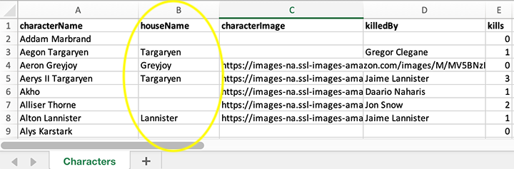
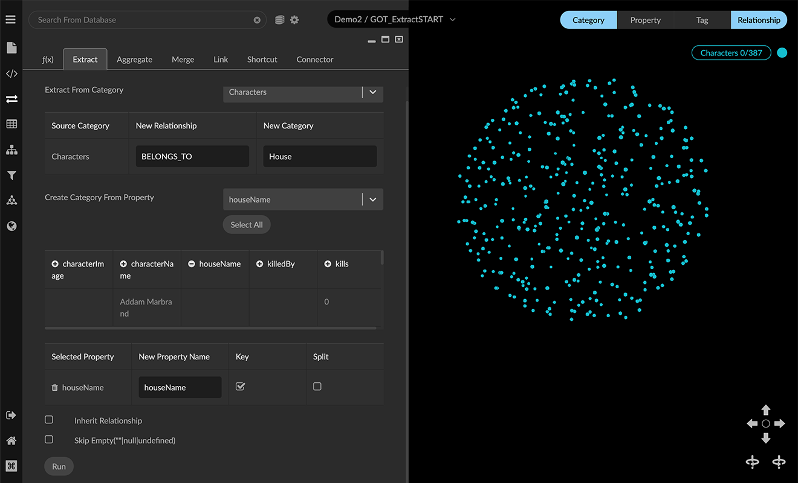
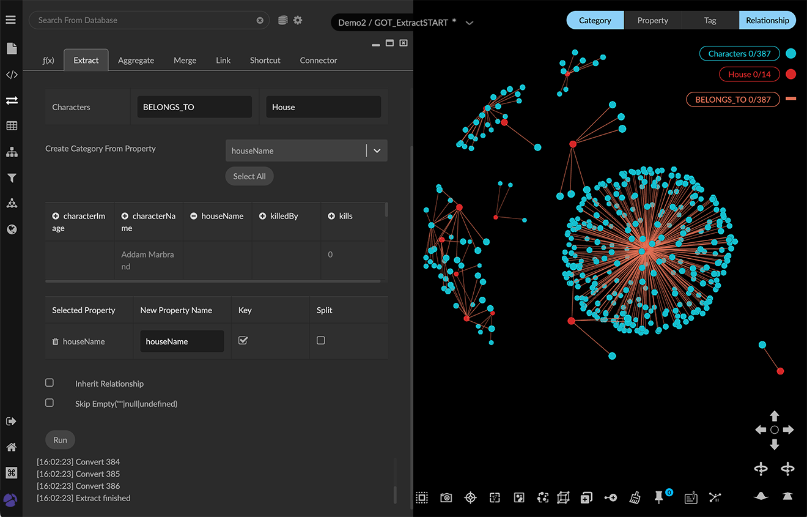
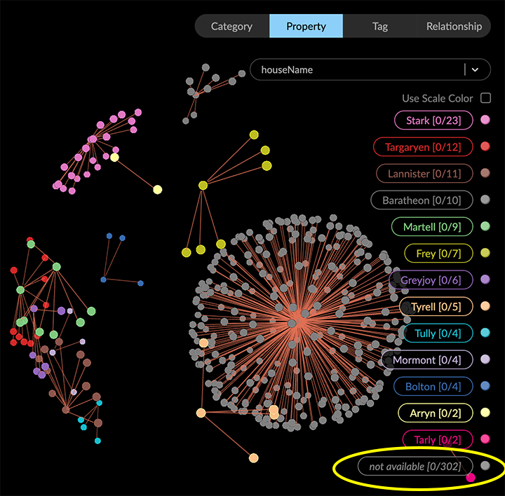

Using Extract The Extract transform lets you generate nodes and edges belonging to new or existing categories and relationships, based on one or more source properties. To illustrate, we’ll extract new categories from a CSV file that’s imported by drag and drop. The Characters.csv file shown below tabulates information about each character in HBO’s Game of Thrones series.  All the data is imported as a single default Characters category. Now we want to extract a separate House category for the family each character belongs to. We can extract a houseName property from Character nodes, and use it to create both a House category and a new BELONGS_TO relationship that connects House nodes to the original Characters nodes. Examples use the open-source dataset for the HBO Game of Thrones series. For a hands-on exercise see our How to GraphXR tutorials. To extract a new category and connecting relationships: In the project space, de-select the data to extract from the entire data set. If you select nodes, Extract operates on only those elements. With nothing selected, transformations affect the whole graph. Open the Transform panel and Extract tab, and enter the following details: In the Extract From Category menu, select Characters, which will appear as the Source Category. If there is only one category in the graph, it is already entered as the Source Category, and the menu does not appear. In the New Relationship textbox, enter BELONGS_TO. In the New Category textbox, enter House. In the Create Category From Property area, select the houseName property from the menu (or click the + (plus) icon next to its name in the table below) to add it to the Selected Property list. Properties in the source data are listed alphabetically in the scrollable list of properties. A sample of data displays below the property names, showing property values and data formats. The selected property name appears in the New Property Name text box. You can enter a different property name, but we’ll leave it unchanged for this example.  Click the Key checkbox to set houseName as a key, so that a single node will be created for each unique value of houseName, rather than a separate one for every source node. If the property value is a list and not a single value, you can click the Split checkbox to create a separate node for each value in the list. Otherwise, a single node will be created with only the first value in the list. Optionally, you can specify additional extraction behavior: Click SkipEmpty to extract the specified pattern only when the source property is present and its value is non-null. For example, the (Character)-[BELONGS_TO]-(House) pattern would be created only for Character nodes that include a houseName property and value. Click Inherit Links to copy any edges connected to the original category to the new extracted category. Our graph does not yet include any edges so we’ll leave it unchecked. Scroll down to the bottom of the panel and click Run. Errors and a completion messages appear below the Run button. The legend now displays the new House category and the new BELONGS_TO relationship. Extracted House nodes appear in the graph space, connected to their respective Character nodes by new BELONGS_TO edges. Since Skip Empty was left unchecked, source nodes with no houseName value are assigned to an unlabeled House node, connected to their respective Character nodes through BELONGS_TO edges.  In the Property list, the houseName property of the unlabeled House node appears as "`not available`". 